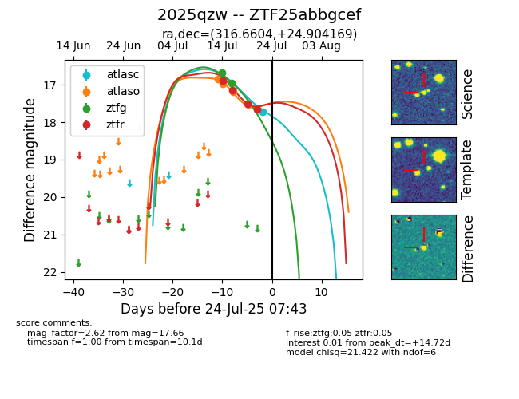

Target ZTF25abbgcef at 2025-07-24 07:43, see:
FINK: fink-portal.org/ZTF25abbgcef
Lasair: lasair-ztf.lsst.ac.uk/objects/ZTF25abbgcef
ALeRCE: alerce.online/object/ZTF25abbgcef
TNS: wis-tns.org/object/2025qzw
YSE: ziggy.ucolick.org/yse/transient_detail/2025qzw
alt names
ZTF25abbgcef (ztf,fink)
2025qzw (tns,yse)
coordinates:
equatorial (ra, dec) = (316.6604,+24.90417)
galactic (l, b) = (71.6793,-14.89532)
photometry
last atlasc=17.71, atlaso=17.53, ztfg=16.95, ztfr=17.66
1 atlasc, 4 atlaso, 2 ztfg, 4 ztfr detections
